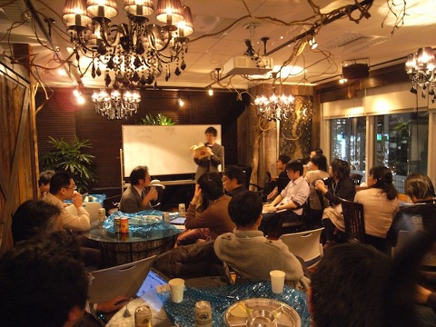
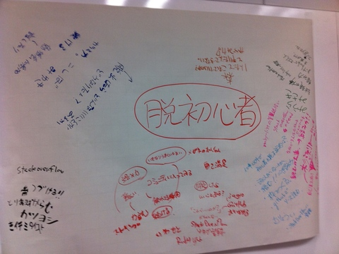
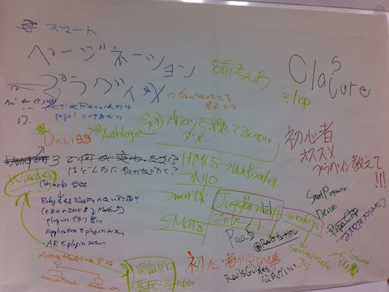
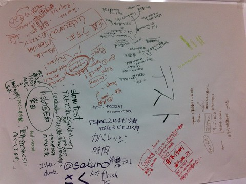
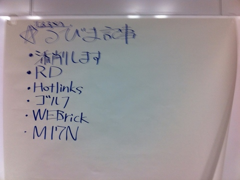
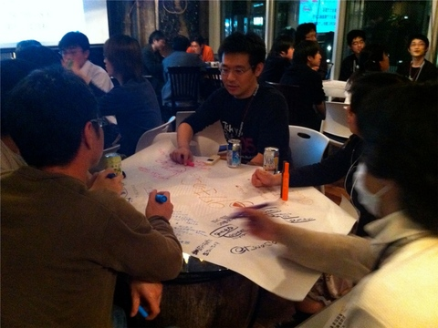

RegionalRubyKaigi レポート (18) 東京 Ruby 会議 05
はじめに
東京 Ruby 会議 05 は東京で 5 回目の開催となる Regional RubyKaigi です。 「もっと会議を、もっと対話を、もっと挑戦を」をテーマとし、より多くの Rubyist がしり込みすることなく、 アクティブにイベントや集まりに参加できるようなきっかけとなるべく、参加者同士の話し合いを中心に据えて企画しました。
東京 Ruby 会議 05 について
: 
- 開催日
- 2011/2/4 (金) 20:00 〜 22:00
- 開催場所
- 株式会社 EC ナビ 社内バー「AJITO」
- 開催母体
- 東京 Ruby 会議 05 実行委員会
- 協賛
- 株式会社シーエー・モバイル / CA MOBILE, LTD.
- 参加者
- およそ 40 名
- 公式ページ
- http://regional.rubykaigi.org/tokyo05
- 公式タグ
- tokyorubykaigi05
- 公式ハッシュタグ
- #tork05
内容
高橋 征義さん「Ruby のたのしさについて」
: 
1 時間、スライドなしで、Ruby のたのしさについてお話しいただきました。
いきなりホワイトボードに「私の名前は〜」と名前を書きだしたので、「今日からこのクラスの担任の〜」というシチュエーションが連想され笑いを誘っていましたが、参加者からの意見を交えた、講演というよりはセッションに近い形でお話をしていただきました。
内容は、下記のようなことに触れていました。
- 「たのしさ」を求めるプログラミング言語というものはあまりない
- Perl は nice な言語で、Ruby は fantastic な言語だ。by DHH
- 他の言語には見られない、このよくわからない「たのしさ」というものにフォーカスした結果が、今の Ruby の発展に繋がっているのではないか
- 構文上、ある程度の制約はあるかもしれないが、それは「たのしさ」のための適度なもの、かもしれない
- どんなところに「たのしい」と感じる？ (参加者に意見を募る)
- ERB で Excel のマクロが書ける
- 直感的にコードが書ける
- 「wordpress を passenger で動かしたとき」
- この意見には、「それどゆこと？」というどよめきが起きました。他の言語ではやろうと思わないけど Ruby ならやる気になる。そんな Hackable なところが好き、とのことでした。
- どんなところが「たのしくない」と感じる？ (参加者に意見を募る)
- Excel の表を大量に処理する際にパフォーマンスが悪い
- この意見に対しては、「ActiveScriptRuby を使うといいよ」という意見が。通常だと別プロセスの扱いでプロセス間通信が大量に発生するところを最適化することによって数百倍パフォーマンス改善するよ、というお話が聞けました。
- 複数のイテレータを連続させた場合、下のほうが「end end end …」となるところ
- オープンクラスで「気に入らなければ自分でつくっちまえばいい。」との意見も。
- Excel の表を大量に処理する際にパフォーマンスが悪い
- どんな環境で Ruby 使ってる？
- Windows : Mac : UNIX = 1 : 1 : 1 のように、割合がほぼ均等になっていました。Windows で使っている人が意外に多くてびっくり、という意見もありました。
- ちなみに Windows での用途としては、「iTunes の曲リストを Android に転送するために Ruby のスクリプトを書いてる」という意見がありました。
- Windows : Mac : UNIX = 1 : 1 : 1 のように、割合がほぼ均等になっていました。Windows で使っている人が意外に多くてびっくり、という意見もありました。
以上箇条書きで紹介しましたが、「たのしさ」を軸に、普段 Rubyist たちがどんな考えで Ruby を使っているのかということが垣間見え、非常に興味深いセッションとなりました。
テーマトーク
: 
後半のテーマトークでは、あらかじめ用意された 8 つ (+ フリー) のテーマについて約 25 分間、グループに分かれて思う存分語っていただきました。そして、参加者の皆さんには模造紙を渡し、語った内容を書き出していただきました。
以下では、実際に作成された模造紙を紹介します。ただしこちらはメモ書きとして作成されたものなので決して読みやすいとは言えませんし、すべての内容について実行委員も把握できていないため十分な情報は伝わらないかもしれません。それでも、現場の臨場感が伝われば幸いです。
脱初心者の一歩
: 
- 「絡み力」をつける
- 勉強会に出て話したりする
- ひとりだけだと良し悪しが判断できない
- github でソースを読む
- stackoverflow や ruby-list の落ち葉ひろい
- 継続力
-
Ruby の検定の Gold
- Ruby を社内で広めるには
- Windows でも動くこと
- 情報が充実していること
- erb 便利
- 読んだほうがいい本
- リファクタリング Ruby
- メタプログラミング Ruby
- 青木さんの添削本
- Ruby Way/Rails Way
Ruby on Rails
: 
- 初心者におすすめのプラグインを教えて
- Rails 3 で何が変わったか
- 「プラグイン作ったんだけど、一緒に名前考えてくれない？」 というテーマも。無事、スマートページネーションに決定していました。
メタプログラミング Ruby
: 
- メタプログラミング Ruby の「魔術書」の章、手法に名前をつけてくれてよかった。
- デバッグが大変。。
テストの書き方
: 
- カバレッジ
- 自動化
- 要件、RSpec
- RSpec 2 はまだ少数
- test:recent、test:uncommitted
- Jasmine (JS 版 RSpec)
ソーシャルアプリ
: 
- プラットフォームのルールに振り回される部分もある
- ソーシャルゲームは「当たる」と一気にスケールする。そこに耐えられる環境・設計が求められる
- ただ、当たらないとほんとに当たらない。なのでやっぱり手軽に構築・削除できるクラウド環境というのは都合がよい。
- AWS 使ってる
- 結局、ボトルネックは DB。Read に関しては Replication Slave をたくさん並べる。Write に関してはマルチ Master 構成をとって、例えばユーザ ID の範囲ごとにパーティショニングして負荷を減らす。
- GAE は 30 秒ルールが厄介。バッチ処理なども HTTP リクエストで起動
- JRuby で動かす際、回避するために DeferredDispatcher が役に立つ。
- DeferredDispatcher の挙動
- なにもせずに、自身の URL へリダイレクト
- require だけして、自身の URL へリダイレクト
- 最後に本来のアプリの処理を実行
- DeferredDispatcher の挙動
- JRuby で動かす際、回避するために DeferredDispatcher が役に立つ。
といった 3 段階の一連の遷移をすることで、インスタンスを維持することで実行時間を稼ぐというもの。これのおかげで GAE上で JRuby で快適にアプリを動かすことができる。
プログラマが知るべき 97 のこと
: 
- 恥ずかしいログやテストデータはやめよう
-
不具合があればまずそれを再現するテストを記述し、それから修正する。それが Rubyist の掟。
- ライブラリの更新などのメンテナンスの工数も考えておかないとすぐにメンテナンスができなくなる
- 差分の量を考えると head を追うのが一番変更作業が少なくて楽
- 変数やメソッドの名前のリファクタリングは重要。気づいたらすぐやる
- データベースについても Rails のマイグレーションはそれを容易にしてくれる
- テスターと仲良くなることは大事
- 高校生 Rubyist がいた
オススメのるびま記事
: 
- 添削します
- RD
- Hotlinks
- ゴルフ
- WEBrick
- M17N
JRuby
: 
- Java の資産が使える
- JRuby on Rails on Tomacat 速い
- JRuby on Rails on GAE
- JVM さえあればどこでも動く
- 2人だと寂しい…
それ以外のテーマ (フリー)
: 
- コミュニティ (*.rb) の個性について
- Unicode 正規化
- 詳しくは @tdtds さんの記事をご覧ください。
今回のまとめと今後について
: 
今回は「もっと会議を、もっと対話を、もっと挑戦を」というスローガンにもある通り、より対話を重視すべく「全員がトーカーである」というコンセプトの元に運用を行いました。 そのため、会議の内容が参加者の皆さんによってその場で作られるという、ある意味リスクを孕んだチャレンジングな試みでしたが、始まってみると各テーブルでは大いに盛り上がった様子が見られ、無事に終えることができました。
このコンセプトについては、@tdtds さんが下記のようなことをブログで仰っていました。
『これらのセッションの間は全員おしゃべりをしているので (名札には全員「talker」と書いてある) 、この間 Twitter にはなんの情報も流れなかった。 当然 Ustream もないわけで、今回の東京 Ruby 会議 05 はその場にいないと得られない何かのために集まるという、Ust 時代 (以降) にあるべきカンファレンスの姿としていいモデルになるんじゃないでしょうか。』
このように評価いただけたことは、私たち実行委員にとってとてもうれしいものでした。
今年の日本 Ruby 会議は「最後の Ruby 会議」と言われていますが、地域 Ruby 会議では各地域がそれぞれの特色を出しつつ、引き続き Rubyist 同士が “絡み” 合える場を作っていければと思っています。これからもよろしくお願いいたします。
追記
人数と抽選と Reject と - 東京 Ruby 会議 05 前後に話したことや考えたこと - by @tatsuoSakurai
人数について
東京 Ruby 会議は、「こんな地域 Ruby 会議を東京でやってみたい」と思ったひとが実行委員長に名乗り出る方式になっていて、毎回コンセプトも規模も違います。（詳しくはこちら → 東京の地域 Ruby 会議のナンバリングとこの先の予定 - 角谷 HTML 化計画 (2011-02-05) ）
東京 Ruby 会議 05 では応募枠を 50 人と設定しました。スタッフとして集まった自分たちのやりたいこと、できることを考えての人数です。募集を開始すると、倍以上の応募をいただきました (自分は東京 Ruby 会議 03 でもスタッフをやらせていただきましたが、応募が集まってくれるかとても緊張しますね) 。
募集時のお知らせ通り、応募枠を超えたため、抽選とさせていただきました。東京 Ruby 会議なんだから、応募枠は 100 人くらいがよいのでは？という声を聞かせてもらいました。枠を増やそうかとスタッフ間で話合いましたが、やりたいことがブレてしまうので最初に決めた 50 のままとしました。
抽選について
なぜ抽選だったのか
ざっくり簡単に言うと「初心者向け」を企画していたからです。勉強会やカンファレンスの多くは先着順です。よく訓練された Rubyist は別として、気づいた時には定員が埋まっていることがほとんどです。初期のスタッフ打ち合わせで、まだまだ駆け出しの Rubyist にも参加しやすいイベントにしようと決めました。もしも応募枠を超えた時の抽選方法は、必要になってから考えることにしました。なんとなく初心者を優先した抽選にしようとなどと考えていました。打ち合わせを重ね、枠を超える勢いで応募が集まる中、ある問題に気が付きました。なんと、初心者を判定する基準がないことに気づいたのです。厳正なる抽選をすることにしました。
抽選の方法
Ruby の Array#sample を使いました。事前にさらっと作っておいたスクリプトに「こくちーず」の CSV データを流して当落 2 通のメールを送るだけの簡単なお仕事ですが、多少の図太い神経が必要かもしれません:) (あまり良い例ではありませんが、当時使ったコードを載せておきます https://gist.github.com/771507)
RejectTokyoRubyKaigi05 について
抽選日の翌日、@jugyo さんにより、RejectTokyoRubyKaigi05 が企画されました (厳正なる抽選の結果、スポンサー企業 (かつ自社) の社長である @nay3 さんや、同僚である @jugyo さん、日頃お世話になっている Rubyist の方々等、多くの方々を東京 Ruby 会議から Reject することとなっていました。RejectTokyoRubyKaigi05 の ATND を見たとき、個人的にだいぶ気持ちが楽になったのを覚えています) 。
当日、Twitter 上では東京 Ruby 会議 05 よりも盛り上がっていました1 。実に良い RejectKaigi だったようです。後日、@jugyo さんと東京 Ruby 会議 05 と RejectTokyoRubyKaigi05 についていろいろと話す機会がありました。「東京 Ruby 会議 05 参加したかった！」という話や、「抽選は納得しにくいよね」という話、TokyuRubyKaigi 2 が東京で 2 回目の開催となる Regional RubyKaigi になったいきさつなどなど、ずっと東京 Ruby 会議がどうあるべきかというような話をしていた気がします。こうして記事を書かせてもらっているのもこの時の話が発端だったりします。
東京 Ruby 会議 05 を終えて
打合わせの前などに、スタッフ同士で Ruby や Rails の Tips など話をするのですが、そういうちょっとした話がすごくたのしいし、身になることが多いなあと思いました。テーマトークではそうした空気を少しは届けることができたかなと思います。
今回、実行委員長のこしばさんに誘っていただき、スタッフをやらせてもらいました。高橋さんを始め、先輩 Rubyist の方々や参加者のみなさんに助けてもらいながら、なんとか健闘できたかなという感じです。みなさんのおかげで意図していた以上にとてもダイナミックで良い Kaigi となりました。何名か Ruby 関連のイベントは初めてという方にも参加していただけてよかったです。
やりたいと思った人が手を上げてやるという東京 Ruby 会議のしくみは、なかなか良いしくみだと思います。やりたいという気持ちだけで上手くはできませんが、スタッフでチームを組み、ナイスな先輩 Rubyist 達に助けてもらいながら健闘することは可能です。自分はまだまだ未熟な Rubyist です。職場や勉強会などで出会う多くのプログラマから、たくさんのきっかけをもらいます。そうしたきっかけを思いきってやってみることにしています。今回の東京 Ruby 会議 05 もいろんなきっかけをくれました。るびまにこうして記事を書かせてもらっていることもそのうちの一つです。参加者を始め、多くの Rubyist にとってもきっかけとなることができたらとても嬉しく思います。
執筆者
- Rubyist
- こしばとしあき（@bash0C7）
- 櫻井達生（@tatsuoSakurai / 株式会社万葉）
- 池田正人（@ikm）
- 岩本政樹（@masaki925）
- デザイナ
- 伊藤ジュンイチ（http://451system.net/）